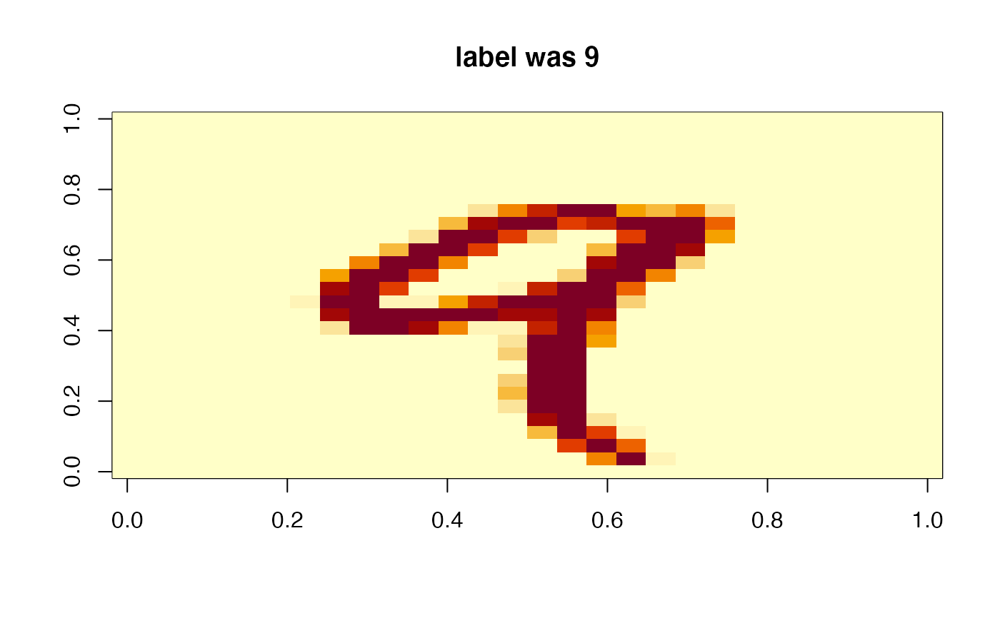
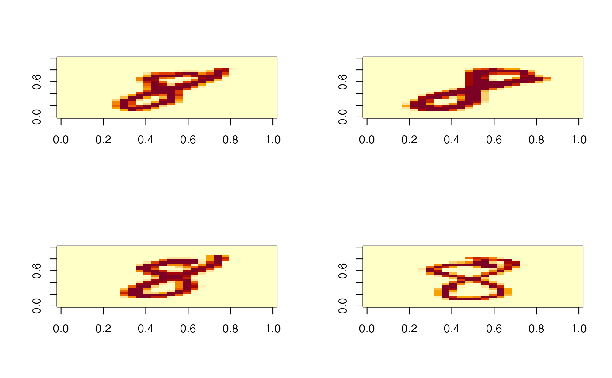
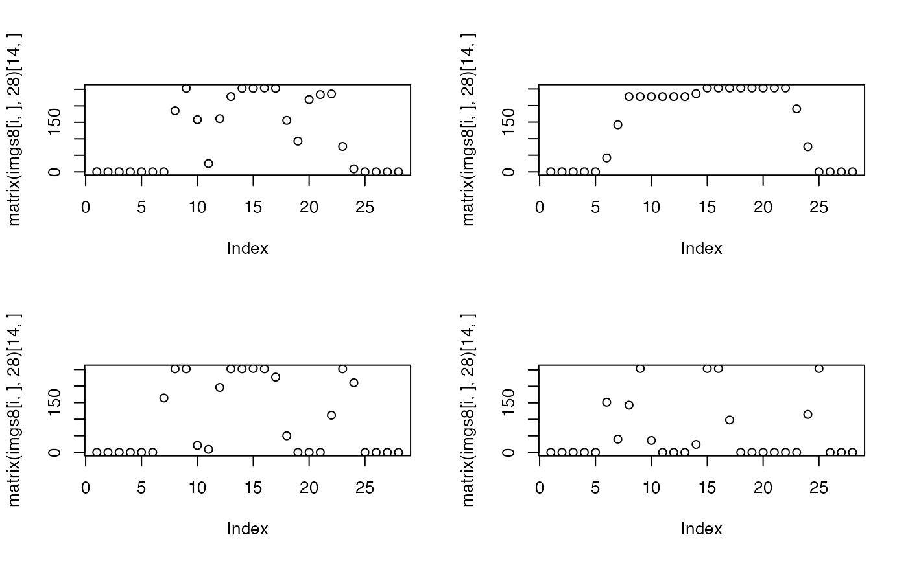

a list with integer matrices and vectors representing handwritten digits as obtained by dslabs::read_mnist
Source:R/data.R
mnist.Rda list with integer matrices and vectors representing handwritten digits as obtained by dslabs::read_mnist
Usage
data(mnist)Examples
# > str(mnist)
# the data has this structure: List of 2
# $ train:List of 2
# ..$ images: int [1:60000, 1:784] 0 0 0 0 0 0 0 0 0 0 ...
# ..$ labels: int [1:60000] 5 0 4 1 9 2 1 3 1 4 ...
# $ test :List of 2
# ..$ images: int [1:10000, 1:784] 0 0 0 0 0 0 0 0 0 0 ...
# ..$ labels: int [1:10000] 7 2 1 0 4 1 4 9 5 9 ...
data("mnist", package="glmmlpack260")
m5 = matrix(mnist$train$images[5,], nr=28)
image(m5[,28:1], main=sprintf("label was %d", mnist$train$labels[5]))

mt8ind = which(mnist$train$labels==8)
imgs8 = mnist$train$images[mt8ind,]
par(mfrow=c(2,2))
for (i in 1:4) image(matrix(imgs8[i,], 28)[,28:1])

for (i in 1:4) plot(matrix(imgs8[i,], 28)[14,])
